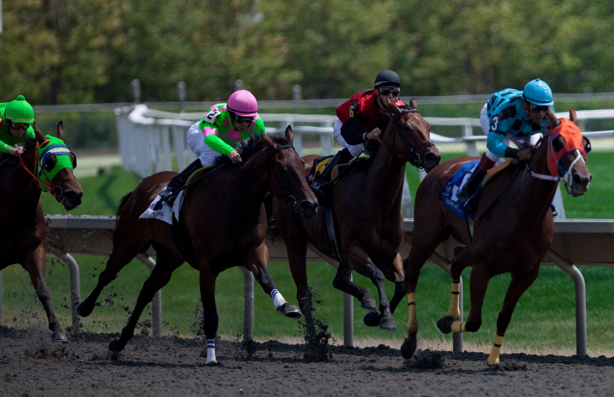

Pascialella vuelve a Auteuil para el Quinté+ y su preparador lo ve claro: «Todo está en verde»
La reunión de este martes 6 de octubre en Auteuil gira en torno al Prix Guillaume de Pracomtal, soporte del Quinté+, donde Pascialella llega con el respaldo explícito de Mickaël Seror.

Mickaël Seror compró a Pascialella después de que ganara una carrera de reclamar este verano en Dieppe, y no esperó para subirle el listón: la llevó directamente a un hándicap de nivel en Auteuil. «Salió muy bien», resume el preparador. «Está en un estado de forma excelente y volvemos aquí con una buena opción que defender. ¡Todo está en verde!».
La yegua sale con el número 9 en el Prix Guillaume de Pracomtal, la primera carrera de la jornada.
Una hora larga después, a las 14.30, se disputa el Prix Pierre et Jean-Marie Mercier, y ahí el nombre que llama la atención es Callisto du Nord, con el número 5. Su ficha reciente se lee rápido: seis victorias en sus últimas siete salidas registradas, y la única derrota fue un quinto puesto sobre vallas. La última de esas victorias llegó en lisa, en Angers, como reaparición. Lo que cambia ahora es el obstáculo: es la primera vez que se enfrenta a los obstáculos grandes. Los números dicen que tiene argumentos para ganar de entrada; la pista dirá si el salto de especialidad le pesa.
El tercer foco está en el Prix Xanthor, a las 15.40. Jeune Coko, que corre con el número 1, fue segundo en su reaparición sobre este mismo recorrido y recupera a James Reveley como jockey. Juntos suman cuatro carreras, con una victoria y dos colocaciones: solo una vez terminaron fuera de los tres primeros.
— Redacción de Galope al Día